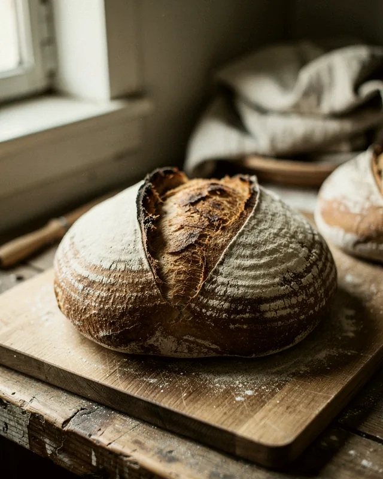
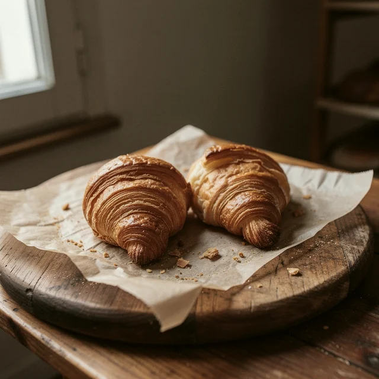
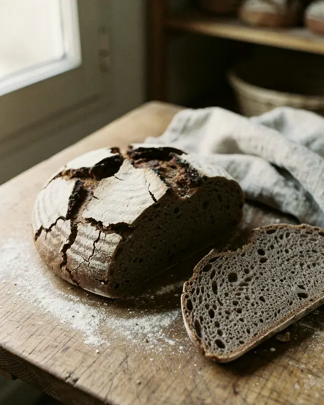
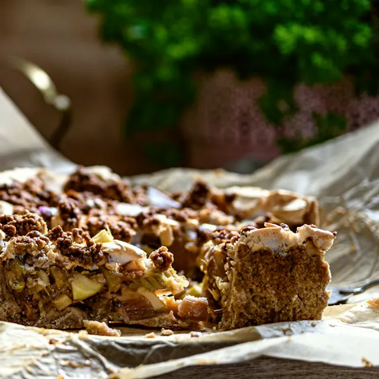
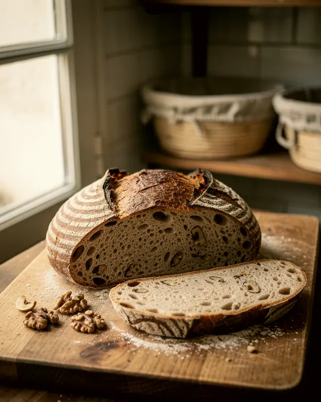
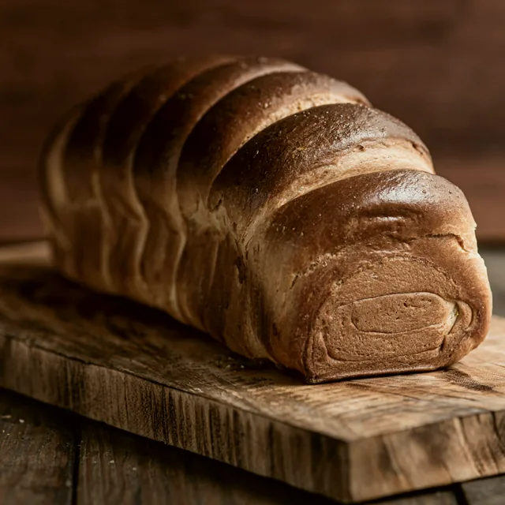
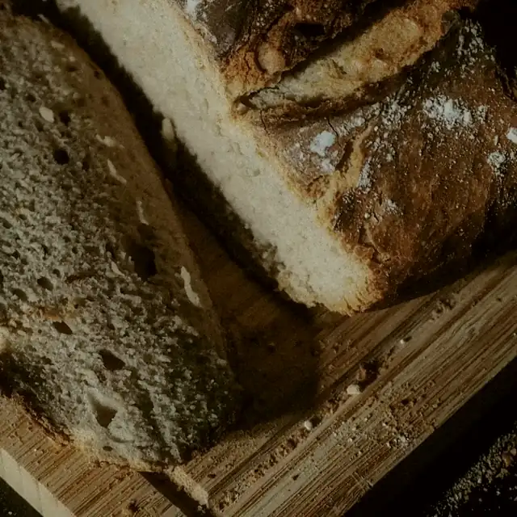
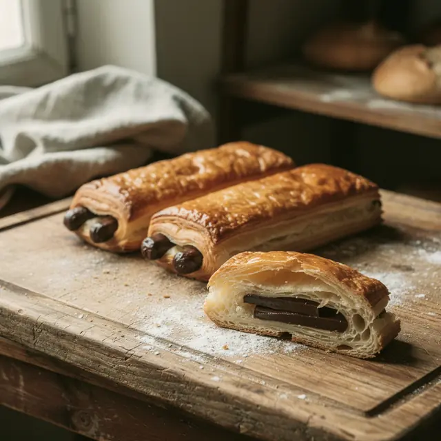
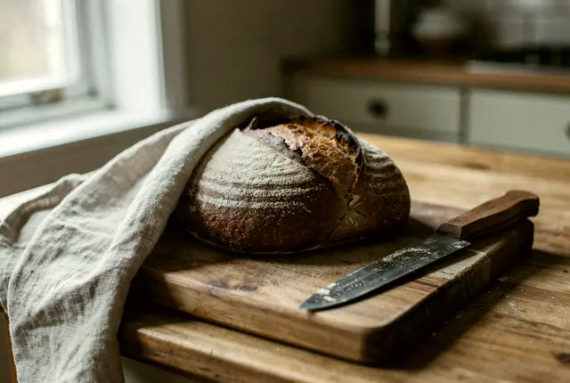

La fournée du jour
Filtrez par famille ou passez en liste : les produits glissent à leur nouvelle place au lieu de sauter. Démo : boulangerie et prix fictifs.

Miche de meule
8,40 € le kilo
Levain, farine T80 du Beaujolais, se garde six jours.

Croissant au beurre
1,40 €
Beurre de Bresse, tourage à la main la veille.

Seigle des Monts
5,20 €
Seigle à 80 %, mie dense, parfait avec les huîtres.

Crumble de saison
3,90 € la part
Pommes du Pilat, pâte sablée aux noisettes.

Pain aux noix
4,80 €
Noix de Grenoble concassées, un tiers de seigle.

Brioche moulée
7,50 €
Œufs de plein air, pousse lente de 18 heures.

Demi-miche
4,30 €
La même miche, pour un foyer de deux.

Pain au chocolat
1,60 €
Deux barres de chocolat noir à 64 %.

Pain au torchon
5,60 €
Façonné à la main, cuit sur la sole du four.